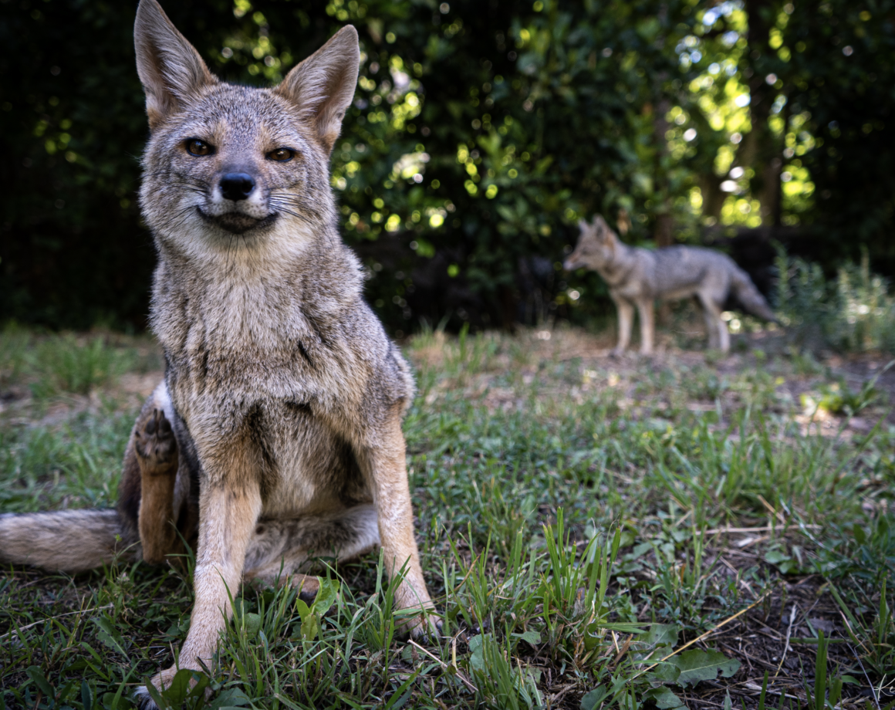
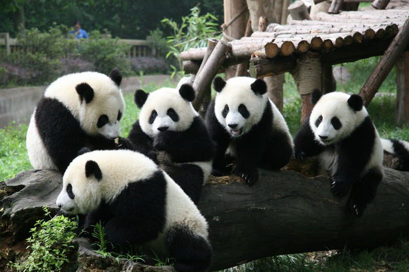
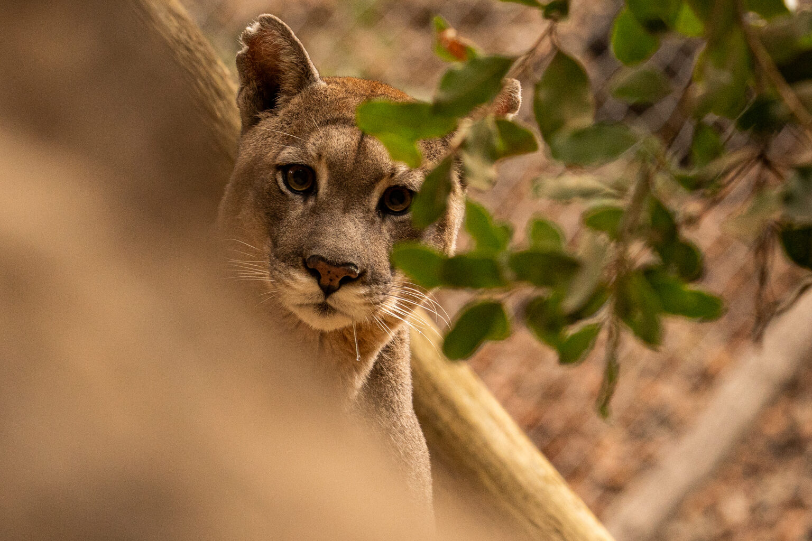
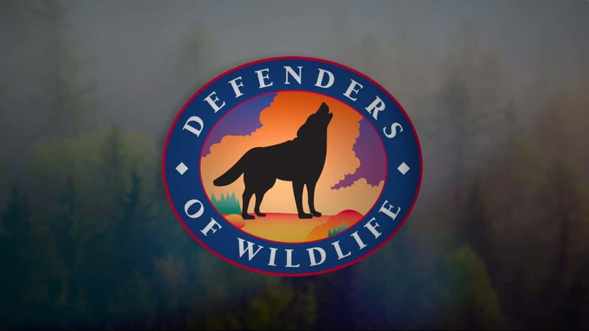

-

Sobre nosotros
U Can Save comenzó como una simple idea entre dos ingenieros informáticos, que decidimos que nuestras habilidades podían tener un impacto más allá del mundo digital.
-

Santuarios verificados
Registramos y verificamos santuarios que muestran sus animales más vulnerables, dando visibilidad a quienes trabajan en primera línea por la conservación.
-

Apadrinamiento directo
Las personas pueden apadrinar un animal específico o hacer donaciones generales, estableciendo un vínculo personal con cada especie y apoyando directamente su cuidado.
-

Alianzas estratégicas
Trabajamos con fundaciones establecidas optimizando sus sistemas de ayuda, creando redes colaborativas que maximizan el impacto de cada recurso donado.
¿Quieres ser parte de U Can Save?
Si te apasiona la conservación animal y quieres aportar tus conocimientos o experiencia, ¡postula aquí para ser voluntario o colaborador! Buscamos personas comprometidas que deseen ayudar en áreas como tecnología, difusión, gestión o trabajo directo con santuarios y animales rescatados.